The final product: a gameplay ability spawns an actor that contains the mesh and decal of the contagion and dynamically resizes it. Mesh and decal made by our team's artists.
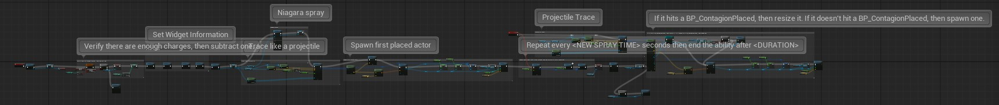
The full gameplay ability for Contagion. After handling the widget blueprints, starts the Niagara spray and spawns the first actor, before creating a timer to spawn more until the ability is over.
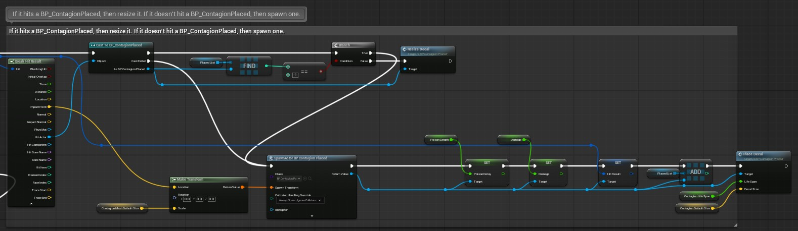
The function that decides whether to make a placed contagion spore larger, or to spawn a new contagion spore.
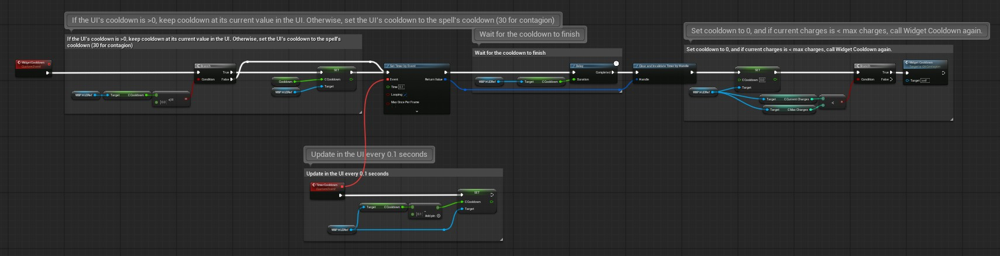
Handles the cooldown percentage in the HUD.
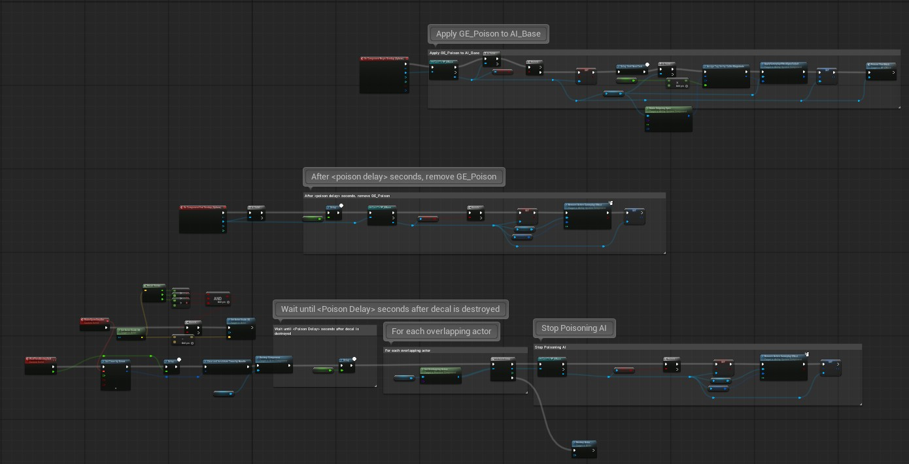
The full blueprint for the placed contagion spores. Handles poisoning enemies.
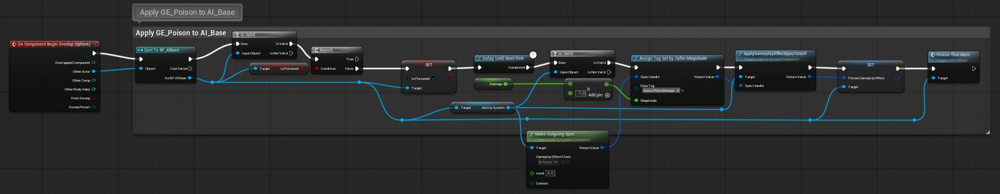
When overlapping with an enemy, contagion poisons that enemy.
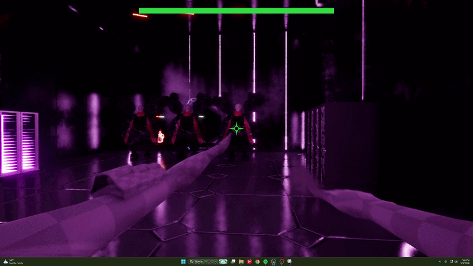
The Final Product: Volt Cascade is a gameplay ability that spawns lightning formed out of smaller lightning segments that are dynamically resized to form the large chains. I worked on the blueprints, the VFX, and altered the materials.
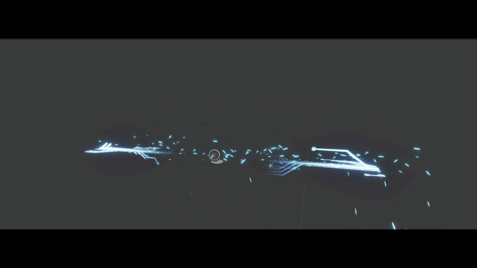
What bp_VoltCascade looks like in the viewport. These segments are used as building blocks to create the full lightning strike, then all lightning blocks in a segment are equally scaled to keep the lightning strike looking visually appealing.
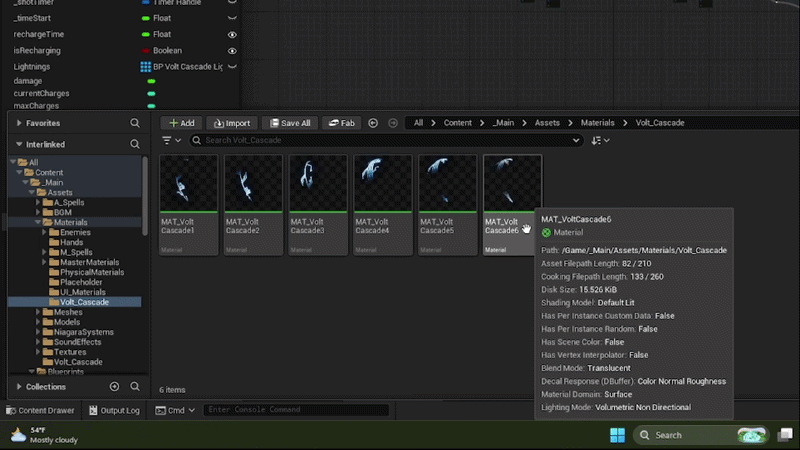
Here are the 6 materials that volt cascade chooses from when created. The texture was made by one of our artists, and then handed off to me to work on the effects.
This is the full settings for the Niagara System handling the sparks on Volt Cascade.
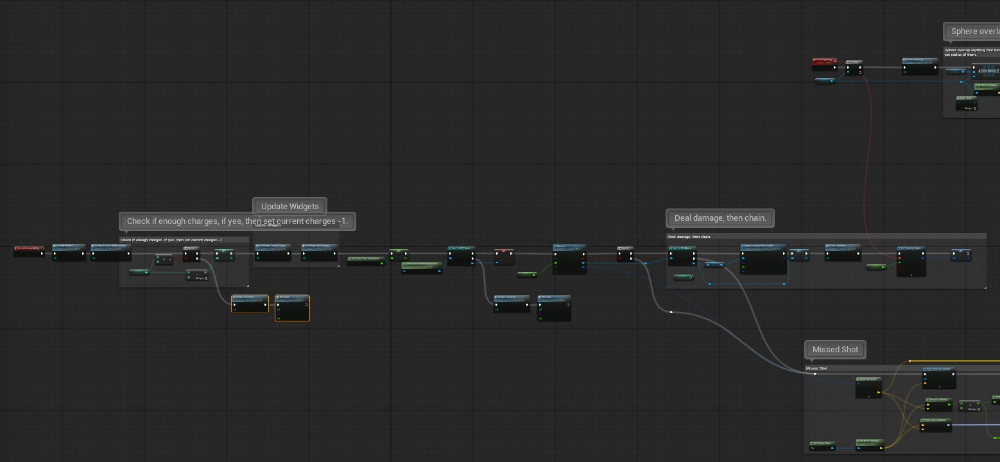
Logic when GA_VoltCascade is originally called. Checks charges, updates widgets, then raytraces to determine if the shot was a hit. If successful, first lightning strike will happen, and chain function will be called. If the player missed, a single bolt will shoot out, hitting where you missed.
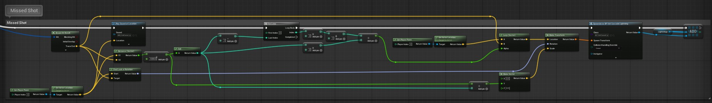
Handles when a player misses their shot. Spawns the lightning between the player and the raytrace end.
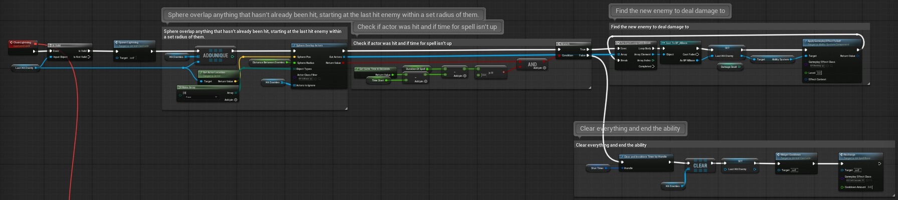
Handles the chain logic. Checks if any AI are within 5 meters of the last hit enemy, and if yes, chains lightning between them, and then sets that AI to the last hit enemy, allowing this chain to continue until there are no AI left to hit.
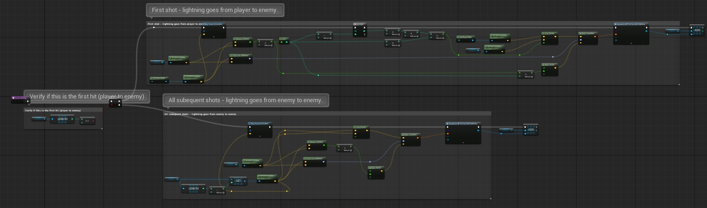
Handles the logic of spawning lightning. The first shot can be up to 30 meters, while the chains can only be up to 5, and each lightning segment is 5 meters long. This handles resizing and spawning lightning segments all in a line so it looks like one long lightning strike, rather than 5 segments.
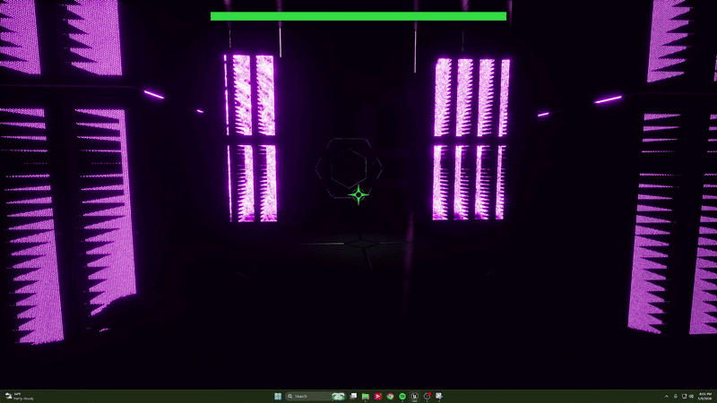
This is a demo of the final Enhancements design. I implemented the entire mechanic, including the Widget functionality, solo over 2 weeks. Integrated with all spells and the player blueprint, every enhancement buffs a different stat, and may debuff another stat as well. Nitro-Propulsor increases the max range of our default fire, doubling it.
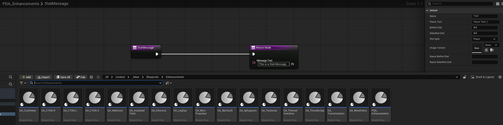
These are all 16 Data Assets representing each enhancement. All are children of a Primary Data Asset, and store their name, their flavor text, their buffed stat number, their debuffed stat number (if applicable), their buffed stat name, their debuffed stat name (if applicable), and the texture shown in the Widget to represent the enhancement. All enhancements inherit "Stat Message" function from PDA_Enhancements that each data asset overwrites, which is the function that changes the text in the enhancements widget to display the correct information..
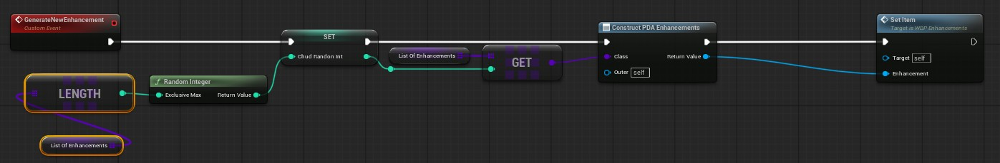
This is the function within WBP_Enhancements that generates a random enhancement for the player to pick up. This function is called whenever the player presses "f" on a dead enemy.
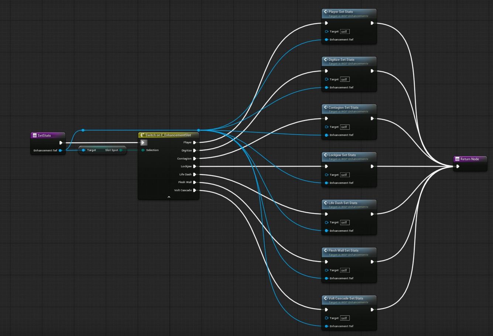
This is the function from within WBP_Enhancements that implements the buffs and debufs from an enhancements. Enhancements are delegated by its "slot type" into a separate function, then functions within the corresponding spell (or the player) are called.
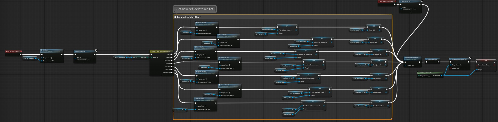
When the player hits the "Take Enhancement" button, set stats is called, before deleting the reference to the old enhancement in its slot (if there was one) and resetting its stat change. Then the Widget closes and the game returns to normal.